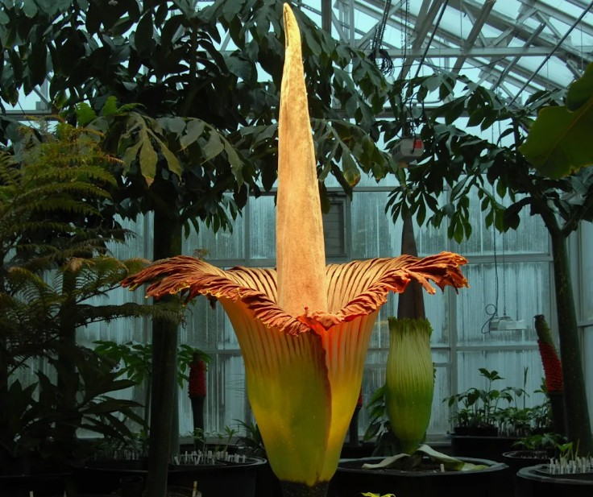
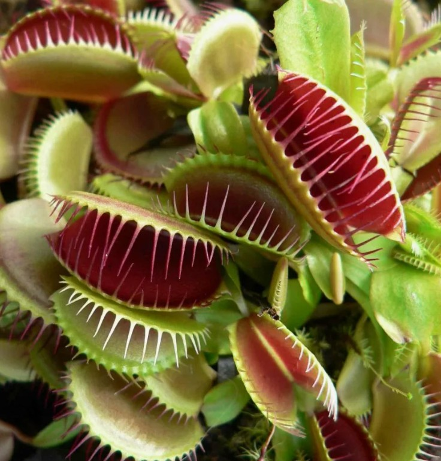
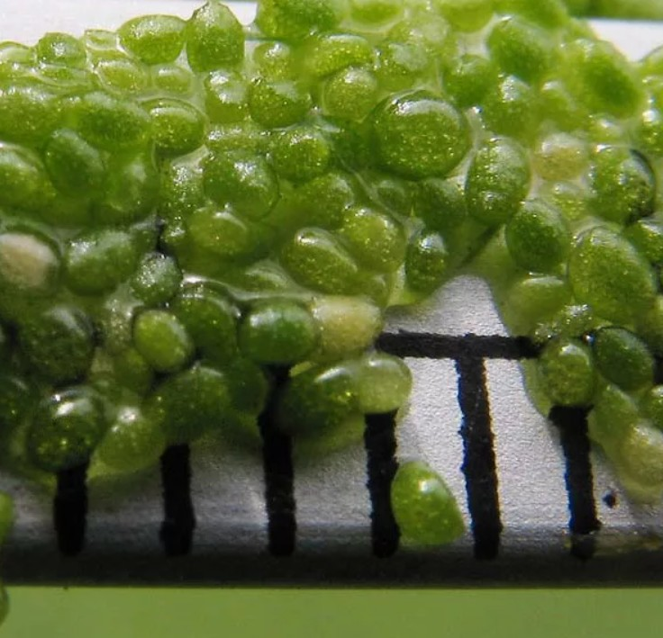
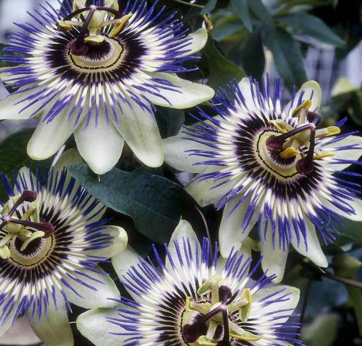
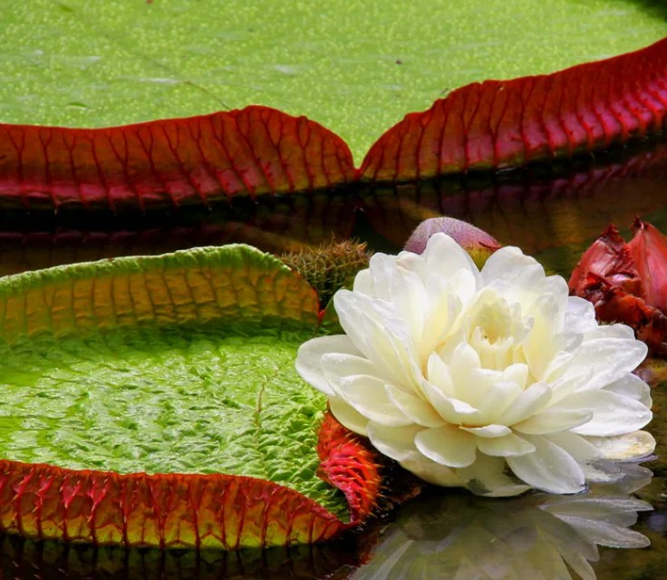
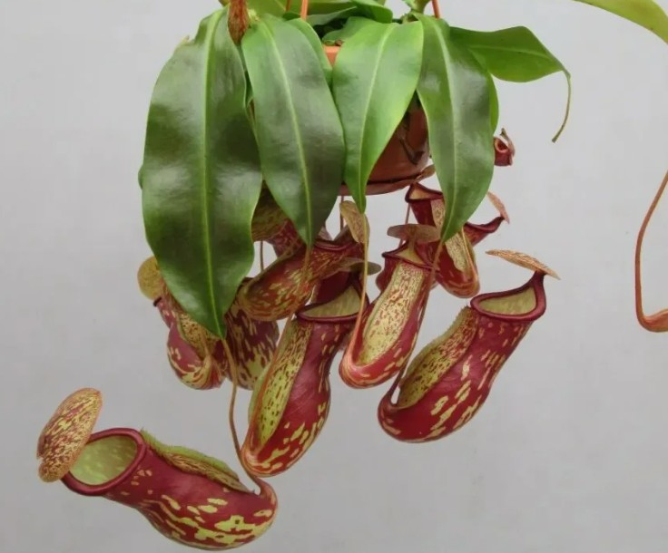

На земле живет огромное количество удивительных существ: от смешных до ужасающих. О многих удивительных растениях мира известно издавна. Но есть совершенно необычные представители флоры, о которых мало кто знает. Между тем они по-настоящему поражают своим внешним видом. Вот некоторые из них:
Аморфофаллус титанический (Amorphophallus titanum)
Второе название – трупная лилия (Corpse lily). Самым необычным растением в мире его делают не только гигантские размеры цветка, но и ужасный запах, который он источает. Хорошо, что обонять аромат тухлого мяса и рыбы приходится всего два дня – таков период цветения этого удивительного растения. Еще одна его особенность – редкое цветение. Живет «трупная лилия» долго, до 40 лет, и за это время цветы на ней появляются всего 3-4 раза. Достигать в высоту растение может до 3 метров, а вес крупного цветка составляет около 75 килограммов. Родина аморфофаллуса титанического – леса Суматры, где сейчас он практически истреблен. Растение можно увидеть во многих ботанических садах мира.
Венерина мухоловка (Dionaea muscipula)
Только ленивый не написал об этом удивительном растении-хищнике. Но сколько бы ни говорилось о нем, венерина мухоловка поражает своей абсолютной чужеродностью. Ее легко можно представить обитателем какой-нибудь далекой и опасной планеты, населенной хищными растениями. Листья венериной мухоловки – идеальная ловушка для мелких насекомых. Как только незадачливая жертва касается листа, он захлопывается. И чем активнее сопротивляется насекомое, тем сильнее стимулирует рост клеток растения. Края ловушки-листа срастаются и превращаются в «желудок», где в течение 10 дней происходит процесс переваривания. После этого ловушка вновь готова к поимке следующей жертвы. Этого необычного хищника можно «приручить» – венерину мухоловку успешно выращивают в домашних условиях. Здесь важно соблюдать правила ухода, и тогда за удивительным плотоядным растением можно будет наблюдать самому.
Вольфия (Wolffia angusta)
Вольфия – одно из самых удивительных растений. В процессе эволюции она утратила ряд органов, например, корневую систему. Жизненная форма растения называется листец. Он представляет собой овальный или шаровидный побег, не дифференцированный на стебель и лист. Длина в зависимости от вида варьирует от 0,2 до 1,5 мм. Окраска чаще всего зелёная, реже бурая.
Вольфия является цветковым растением, хотя разглядеть ее миниатюрные соцветия можно исключительно под микроскопом, да и появляются они достаточно редко. Цветок состоит из одного пестика и одной тычинки.Удерживаться на поверхности воды вольфии помогают многочисленные воздушные полости. Вольфия широко распространена на нашей планете. Ее можно обнаружить, как в тропических водоемах, так и в более прохладном климате. Растения предпочитают стоячие водоемы, богатые органикой – канавы, пруды, озера. Иногда их можно встретить даже в лужах
Пассифлора (Passíflora)
Пассифлоры - род растений семейства страстоцветные. Они могут похвастаться разнообразными великолепными цветами, а некоторые и вкусными плодами. Немножко о названии: Passiflora происходит от латинского «passio» — страдание и «flos» — цветок. Русское название Страстоцвет является переводом латинского названия (страсть + цветок). Такое необычное название имеет следующее происхождение: растения попали в Европу после открытия нового Света.
В 1610 году изображение цветка пассифлоры попало в руки итальянского историка и религиозного деятеля Джакомо Босио. Босио начал собирать и другие описания и изображения цветка, привозимые мексиканскими иезуитами, и в том же году опубликовал доклад «Della Trionfante e Gloriosa Croce», где описал цветок пассифлоры как наглядное воплощение Страстей Христовых. Три рыльца пестика символизировали гвозди, которыми были прибиты к кресту ступни и руки Христа. Внешняя корона олицетворяла терновый венец, тычинки — пять ран. Семьдесят две венечные нити внутренней короны были приняты за количество шипов тернового венца. Копьевидные листья обозначили копьё, пронзившее Христа. Желёзки, найденные на обратной стороне листа, должны были означать тридцать сребреников, полученных Иудой за предательство.
Виктория амазонская (Victoria amozonica)
Виктории амазонской (второе название — виктория регия) вполне заслуженно достался статус самой большой кувшинки в мире. Там, где она растет, диаметр листьев, лежащих на водной глади, достигает 2 м! Они достаточно мощные и имеют форму круга. По одним данным, гигантский лист может выдержать груз в 16 кг, а по другим – все 50 кг! Благодаря такой внушительной грузоподъемности кувшинка давно используется аборигенами в качестве лодки, на которой плыть по Амазонке – одно удовольствие. Если уложить листья растения цепочкой от одного речного берега до другого, они вполне заменят мост.
Многолетнее растение входит в семейство Кувшинковых и является самым большим его представителем. В родных местах оно живет до 5 лет, а в условиях культивации – не более 1 года. Чтобы выращивать викторию амазонскую, берут семена растения. Лист поражает своими размерами. За счет формы он напоминает блюдце, из которого прямо на речной глади пьет чай некий великан. Иллюзия усилится еще больше, если взглянуть на края листа – они немного приподняты кверху. А вот снизу сходство с блюдцем теряется, ведь на дне лист вооружен шипами, острия которых призваны защитить кувшинку от желающих полакомиться ею рыб. На обратной стороне листа вместо шипов расположены полые ребра, за счет которых поверхность невероятно крепкая. Окрас нижней пластины варьирует от зеленого до красно-бурого, тогда как верхняя пластина — всегда зеленая.
Непентес (Nepenthes)
Еще одно растение-хищник, удивляющее необычным внешним видом, произрастает преимущественно в Азии. Забираясь высоко на соседние деревья, эта кустовидная лиана наряду с обычными листьями имеет особые ловчие, принимающие форму кувшина длиной до полуметра. Они окрашены в яркие цвета для привлечения внимания насекомых. Верхний край кувшинчика содержит душистый нектар. Насекомое, привлеченное запахом и расцветкой растения, заползает внутрь кувшинчика и скатывается по его гладкой поверхности вниз. На дне находится жидкость, состоящая из пищеварительных ферментов и кислот – настоящий желудочный сок. Внутренняя поверхность ловчего листа выстлана восковыми чешуйками, которые не позволяют жертве выбраться из ловушки. Как и венерина мухоловка, непентес в течение нескольких дней переваривает насекомое. Это одно из самых необычных и впечатляющих растений в мире.
